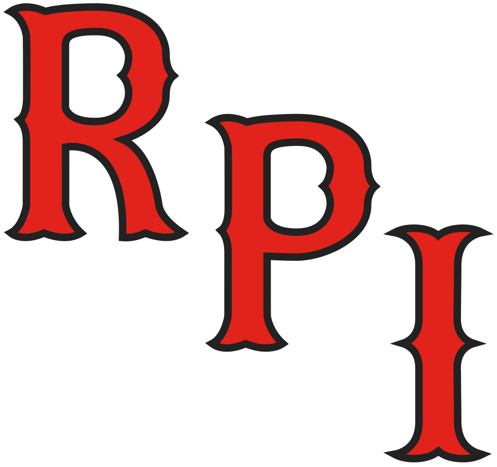
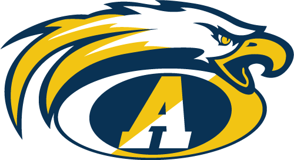

-
My name is Shardul Joshi and I am a first-year student at Rensselaer Polytechnic Institute studying computer science along with a minor in management (business). Being on an accelerated path, I will be participating in RPI's Arch program early. The Arch is a program that enables undergraduates to have an “away” experience during the school year, unlike students at other schools, who have to pursue such opportunities during the shorter summer breaks. To accomplish this, Rensselaer students take courses during the summer after their sophomore year to replace a semester during the following school year. My accelerated status means that although it is my first year, I am classified as a sophomore academically, and will therefore be taking my Arch summer semester this coming summer. This will lead to an “away” Spring 2021 semester, for which I am seeking a software engineering co-op. This semester, I have taken Data Structures and become very familiar with C++ and various types of data structures, both regarding their use and their implementations. Next semester, I will be taking Foundations of Computer Science and Computer Organization. Following that and prior to the start of a Spring 2021 co-op, I will have taken Introduction to Algorithms, Principles of Software, Graph Theory, Operating Systems, Programming Languages, and Database Systems. These classes will ensure that I am well-equipped with the technical knowledge necessary to be trusted with greater responsibilities in a co-op level position. I look forward to the prospects of making significant contributions in a Spring 2021 semester software engineering position.
-

Rensselaer Polytechnic Institute
Bachelors of Science, Computer science
Troy, NY
2022GPA: 3.84/4
Additional minor in Management (business)
Notable courses include Data Structures, Foundations of Computer Science, Computer Organization, and Introduction to ManagementAndover High School
High school diploma
Andover, MA
2019GPA: 3.87/4 (unweighted), 4.53/5 (weighted)
Honor roll
Top 10% of a 446-member graduating class -
- Technical
- Python Java Swift C C++ HTML CSS JavaScript Git web/mobile app development data structures
- Soft
- writing organization team leadership project management team building project planning public speaking
- Languages
- English Spanish Marathi
-
-
The Polytechnic (school newspaper)
The Polytechnic, or the Poly, for short, is the online school newspaper of RPI, found at poly.rpi.edu. We help keep the student body informed of campus news by covering events, conducting interviews, and more. Additionally, staff and general public can write opinion pieces to express arguments that they feel are important. We have several departments: News, Features, Editorial/Opinion, Sports, Photo, Publicity, and Copy. Elections for voting member positions are done at the end of each semester for the following one. Joining the Poly has been a great decision for me. I have began to enjoy writing in recent years, but I still find that I consider other subject priorities. At a STEM school where the humanities are less emphasized, I knew I would not pursue them in a classroom setting, so I wanted to find a way to keep up my writing. The Poly provided me with that opportunity, as well as introduced me to a great group of people who shared my combined interest in both technology and writing.
Positions held Time period Editorial/Opinion Coordinator Spring 2020 Associate News Editor Fall 2019 -
Spoonful of Sarcasm
I have been playing guitar since 6th grade, having taken lessons since then until I left for college this past school year. In freshman year of high school, a group of friends and I decided to join an ensemble at our common music school, which was organizing these small bands and providing them space to practice and and mentor. This group of 5 grew closer over the years, and we began to play more and more often, and for more and more public audiences. We have played at the Hard Rock Cafe (Boston), Harvard Stadium, Gillette Stadium, and many open mic nights in our local area. We have also played live on WEMF Radio. Eventually, we were writing our own songs, too, and have even published a few on all major streaming services, such as Spotify and Apple Music. Learn more about us at spoonfulofsarcasm.tk.
Positions held Time period Rhythm guitarist Sep 2015 – present -
Cross country (high school)
In the days leading up to the start of high school, excitedly, I tried out for the freshman soccer team. With limited experience in soccer, unsurprisingly, I did not qualify for the team. In retrospect, getting cut from that team worked in my favor; two days later, crestfallen and rather reluctantly, I joined the cross-country team. When my dad dropped me off at the first practice, I fully expected to hate the sport and quit the very next day. I could not have been more wrong – I ran three miles that day and quickly became captivated with the runner’s high. Over the next four seasons, I made great friendships and found a strong comraderie in the team that I thoroughly enjoyed being a part of. I was not very good, but I kept running and was even elected captain at the end of my junior year, giving me the opportunity to do for the new freshman what previous captains had done for me.
Positions held Time period Captain (JV & Varsity) Fall 2018 General JV team member Fall 2015, 2016, 2017 -
Computer Science Club (high school)
Our computer science club in high school met weekly for many various activities. Sometimes it was taking the tests for the American Computer Science League competition or preparing for them. Other times we each worked on our own computer science projects, personal or academic, helping each other with bugs. A few times we also took it upon ourselves to learn something new together, from a new language to how to tackle a certain challenge. We even spent some meetings brainstorming potential ideas for projects we would want to do sometime, and thought of the various technologies we would need to complete it. We also participated as a team in cybersecurity capture-the-flags, programming competitions, and hackathons. It was a very small club, with no leadership positions.
Positions held Time period Member Sep 2017 – June 2019 -
Science Team (high school)
At the beginning of my junior year, my friend, who was captain of our school's science team, encouraged me to join the team. The team was part of the North Shore Science League, which was made up of teams from about 20 high schools and held monthly meets throughout the school year. Three different events occurred at each meet, and each school team could send up to three four-person groups to each event – A, B, and C teams. Only the A team would score for the school in the event. Whichever school scored the most points across all three events would win the meet, and at the end of the school year, the schools would be ranked for an overall year's awards. After attending my first meet, my event team, which was the A-team for my school for the event, placed very high, missing first place by just a few points. Throughout the year, I continued to contribute in whatever way I could to help the team ultimately place third at the end of the year. The team leadership and teacher advisors then encouraged me to apply for a leadership position for the following school year, for which they then selected me from the pool of applicants. As Logistics Coordinator, I was in charge of managing funds, obtaining materials for our various events, and team purchases (food, materials, etc.). I held this position for my senior year, and we placed third in the league once again at the end of the year.
Positions held Time period Logistics Coordinator June 2018 – June 2019 Member Sep 2017 – June 2018
-
The Polytechnic (school newspaper)
-
Title Level of recognition Date National AP Scholar High school, State, National Jul 2019 AP Scholar with Distinction High school, State, National Jul 2019 MA Seal of Biliteracy High school, State Jun 2019 Rensselaer Recognition Award College May 2019 Rensselaer Leadership Award College Mar 2019 National Honor Society High school, State, National Nov 2017+ -
Get in touch
Feel free to reach out to me by email, text, or phone call
joshardul@gmail.com | (603) 494-2452